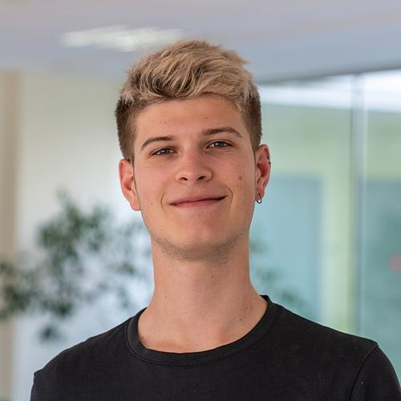

About the author - Quentin Tuffery
Studies
Quentin is a french IT (information technology) student for the University of Technology of Troyes (UTT). He is actually in his 4th year of engineering degree
Personal life
Quentin's personal life is still very myserious. However, it has been heard that he had parents, and that he may have brothers or sisters.
The source from this rumor remains unknows, which makes it difficult to attest the veracity of this information
Professional life
Quentin is currently seeing for a six-month internship, in the public or private field.
He is planning to work either in Troyes or Paris. He really tries to find a company whose project can have a positive impact on society and/or environment
But what about raspberries
Quentin once said that he enjoyed raspberries very much. Some rumors say that it is his favorite fruit for several reasons :
- The wonderful red/pink color of raspberries
- Their tiny and cute size
- Their awesome taste
- They remind him of nice summer and autumn feelings